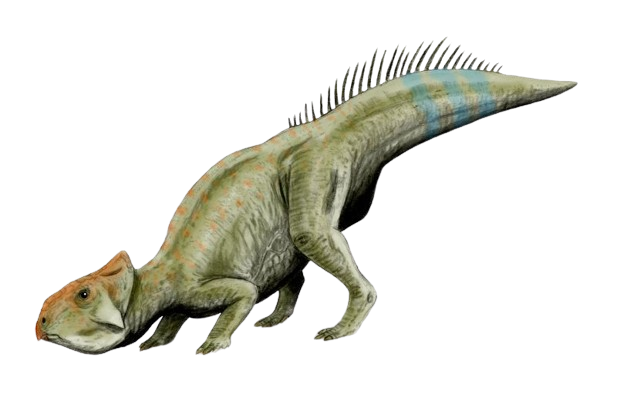
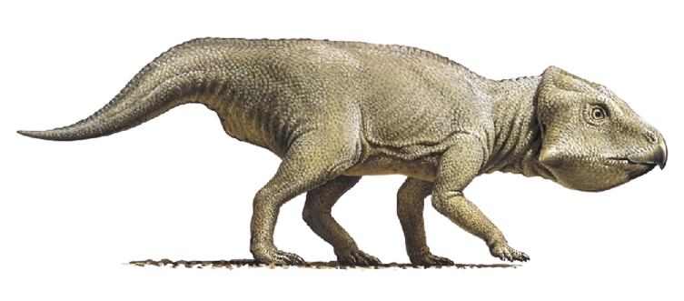
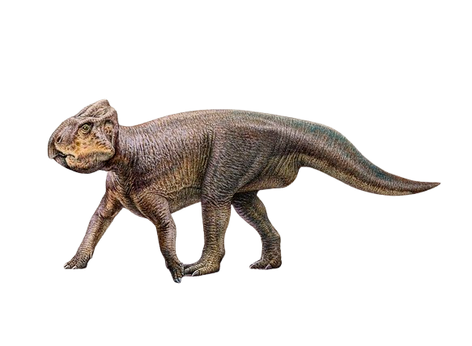
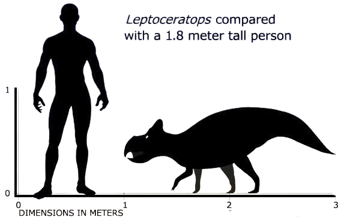

Română
Leptoceratops, știut și ca “Mărunta înfățișare încornorată”, este originar din Canada, Alberta respectiv USA, Wyoming. Acest ierbivor, denumit de Barnum Brown, avea o lungime medie de 2 metri și a trait în Maastrichtianul din Cretacic. Rămășițele acestei specii sunt vaste, fiind prezente specimene care sunt aproape complete.
English
Leptoceratops, also known as the "Small Horned Face," is native to Canada (Alberta) and the USA (Wyoming). This herbivore, named by Barnum Brown, had an average length of 2 meters and lived during the Maastrichtian stage of the Cretaceous. The remains of this species are extensive, with specimens that are nearly complete.